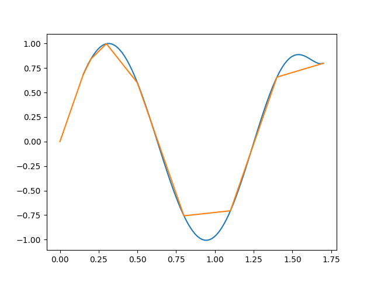

Diyelim ki elimizde alttaki veri var.
x = np.arange(1,7)
y = np.array([10, 5.49, 0.89, -0.14, -1.07, 0.84])
plt.plot(x,y,'.')
plt.ylim(-2,12)
plt.xlim(0,7)
plt.savefig('compscieng_1_21_01.png')
Bu veriye istediğimiz kadar bükümü olan bir eğri nasıl uydururuz? "İstediğimiz kadar bükümü olan eğri" polinom çağrısı yapabilir.. Mesela bir polinom eğri,
$$ y = c_1 x^3 + c_2x^2 + c_3x + c_4 $$
olarak gösterilebilir. Mesela bazı gelişigüzel sabit değerler $c_1=1,c_2-20,c_3=1,c_4=-4$ sabitlerinden alttaki görüntü çıkar,
x2 = np.linspace(0,10,1000)
c_1 = 2.; c_2 = -20.; c_3 = 1.; c_4 = -4
y2 = c_1*x**3 + c_2*x**2 + c_3*x + c_4
plt.plot(x2,y2)
plt.savefig('compscieng_1_21_02.png')

Eğri iki kere bükülebiliyor çünkü formül küpsel. Karesel olsa sadece bir kere bükülebilirdi. Peki karesel, ya da küpsel ya da daha üst derecedeki polinomları veriye nasıl uydururuz? Acaba lineer regresyonu bir şekilde kullanabilir miyiz? Ama lineer regresyon, adı üstünde, "lineer", yani doğrusal. Doğrusal olmayan bir şeyi nasıl uyduracağız? Şimdi lineer regresyonun neyi uydurduğunu hatırlayalım,
$$ y = c_1 z_1 + c_2 z_2 + .. + c_nz_n $$
Bu çok boyutlu, her biri birer vektör olan $z_1,..,z_n$ ile tek vektör $y$ ilişkisini girdi olarak alıyor (üstteki formülü ya vektörsel işlem olarak ya da $y,z_i$ öğelerinin teker teker formüle geçildiği şekilde görebiliriz).
Acaba şöyle bir numara yapamaz mıyız? Eğer elimizdeki tek boyutlu veriyi alıp, onun tamamının bir kere karesini, bir kere küpünü, vs. ayrı ayrı alıp her sonucu sanki ayrı bir boyutlarmış gibi lineer regresyona verirsek, otomatik olarak eğri uydurmuş olmaz mıyız ?! Yani üstteki örnek için $z_1=x^3,z_2=x^2,z_3=x,z_4=1$ olacak, matris formunda,
$$ A = \left[\begin{array}{rrrr} x_1^3 & x_1^2 & x_1 & 1 \\ x_2^3 & x_2^2 & x_2 & 1 \\ \vdots & \vdots & \vdots & \vdots \\ x_m^3 & x_m^2 & x_m & 1 \end{array}\right] $$
ki $x_i$, $x$ vektörünün tek bir öğesini temsil ediyor. Gerisi bildiğimiz En Az Kareler yöntemi ile $Ax=b$'yi, ya da üstteki notasyona göre $Ac=y$ çözmek, $(A^TA)^{-1}A^Tc$ ile (tabii QR kullanmak daha iyi ama bu basit örnek için önemli değil). Baştaki örneği çözelim mesela
import scipy.linalg as lin
A = np.array([x**3, x**2, x, np.ones(len(x))]).T
res = np.dot(np.dot(lin.pinv(np.dot(A.T,A)),A.T),y)
print A, '\n\n', res
[[ 1. 1. 1. 1.]
[ 8. 4. 2. 1.]
[ 27. 9. 3. 1.]
[ 64. 16. 4. 1.]
[ 125. 25. 5. 1.]
[ 216. 36. 6. 1.]]
[ 0.03925926 0.42313492 -6.5032672 16.12666667]
Kütüphane çağrısı polyfit kullanırsak,
print np.polyfit(x,y,3)
[ 0.03925926 0.42313492 -6.5032672 16.12666667]
Tıpatıp aynı sonuç çıktı, çünkü büyük bir ihtimalle polyfit aynı
tekniği kullanıyor!
plt.plot(x,y,'.')
plt.ylim(-2,12)
plt.xlim(0,7)
yy = res[0]*x**3 + res[1]*x**2 + res[2]*x + res[3]
plt.plot(x,y,'.')
plt.hold(True)
plt.plot(x,yy)
plt.savefig('compscieng_1_21_03.png')

Uyum fena değil! Not: eğri kesikli çıktı çünkü çok az sayıda veri var.
Lagrange Aradeğerlemesi (Lagrange Interpolation)
En ekşi ve en yaygın uygulaması olan aradeğerleme fonksiyonlarından biri JL Lagrange tarafından yayınlanmış olandır. Pratik faydalarının yaninda bu tekniğin önemli bazı teorik sonuçları var, bu sebeple yaklaşık ya da olmayan entegrasyon ve türev alma tekniklerini bir fonksiyonu Lagrange aradeğerlemesi ile temsil etmeyi baz alıyor [1, sf. 268].
Lagrange tekniğinin önemli bir özelliği yaklaşık temsil edilecek fonksiyon için seçilen değerler üzerinde aynen verinin söylediği değerleri tekrar üretebilmesi. Yani eğer $f(x)$'i bir $f_h(x)$ ile yaklaşık temsil etmişsek, ve eğer $f(1) = 3$ ise, aradeğerleme sonrası $f_h(1) = 3$ olacaktır, ve bu üzerinden aradeğerleme yapılmış tüm veri noktaları için doğru olacaktır. Ayrıca bu tekniğin önemli bir özelliği üzerinden aradeğerleme yapılan $x$ değerlerinin gelişigüzel seçilebilmesi, eşit aralıkta alınma gibi bir zorunluluk yok.
Şimdi diyelim ki elde modellenen $f(x)$ için elde $n$ tane $x_1,x_2,...,x_n$ değeri var, ki
$$ f(x_i) = y_i, \qquad i=1,2,..,n $$
Çözmek istediğimiz problem mümkün olan az derecede olan bir polinom $P_m(x)$ yaratmak öyle ki bu polinom eldeki $(x_i,y_i)$ veri noktalarını temsil edebilsin, yani
$$ P_m(x_i) = y_i, \qquad i=1,2,..,n $$
Daha önce söylediğimiz gibi veri noktalarında aradeğerleme ve veri aynı sonuçta olmalı.
Bu amacla $n$ tane ayri ayri polinom $p_i(x)$ yaratacagiz, ve bu polinomlar oyle tasarlanacak ki $x_i$ noktasinda biri aktif olacak, digerleri yokolacak. Bu bize bir delta fonksiyonunu hatirlatabilir, bu dogru, su sonucu istiyoruz,
$$ p_i(x_j) = \delta_{ij} = \left\{ \begin{array}{ll} 1 & \textrm{eğer } j = i \textrm{ ise} \\ 0 & \textrm{eğer } j\ne i \textrm{ ise} \end{array} \right. $$
def Lagrange(x, y, n, xi):
yi = 0e0
for i in range(1,n+1):
p = 1e0
for j in range(1,n+1):
if (j != i): p *= (xi - x[j])/(x[i] - x[j])
yi += p * y[i]
return yi
n = 8 # kac veri noktasi
ni = 100 # kac aradegerleme noktasi
x = [0]*(n+1)
y = [0]*(n+1)
# f(x) = sin(5*x), x degerleri gelisiguzel secilmis
x[1] = 0.15; x[2] = 0.2; x[3] = 0.3; x[4] = 0.5;
x[5] = 0.8 ; x[6] = 1.1; x[7] = 1.4; x[8] = 1.7
for i in range(1,n+1): y[i] = np.sin(5*x[i])
h = (x[n]-x[1])/(ni-1)
xx = []; yy = []
for i in range(1,ni+1):
xi = x[1] + (i-1)*h
yi = Lagrange(x,y,n,xi)
xx.append(xi)
yy.append(yi)
xx = np.array(xx)
yy = np.array(yy)
plt.plot(xx,yy)
plt.plot(x,y)
plt.savefig('compscieng_app20cfit1_01.png')

Kaynaklar
[1] Beu, Introduction to Numerical Programming A Practical Guide for Scientists and Engineers Using Python and C/C++